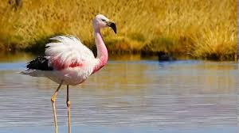

Colección de Especies
Explora nuestra selección de aves y descubre datos fascinantes sobre cada especie

Aguila ratonera pechinegra
Geranoaetus melanoleucus

Aguilucho Negro
-

Avoceta Andina
Recurvirostra andina

Chorlito de Puna
Charadrius alticola

Chullumpi
Anas flavirostris oxyptera

Cigüeñuela
Himantopus mexicanus

Gallineta Comun
Gallinula chloropus
Gallinula Morada
Porphyrio martinicus

Garceta Bueyera
Bubulcus ibis
Garceta Grande
Ardea alba

Garza Nocturna
Nycticorax nycticorax

Gavilan Dorsirrojo
Parabuteo unicinctus

Gaviota Andina
Chroicocephalus serranus

Golondrina Andina
Orochelidon andecola

Huallata
Chloephaga melanoptera

Leke Leke
Vanellus resplendens

Minero de Puna
Geositta punensis

Parihuana
Phoenicoparrus andinus

Parpadeo Andino
Colaptes rupicola

Pata Amarilla Menor
Tringa flavipes
Pato Puna
Spatula puna

Pato Rana
Oxyura ferruginea
Pato Sutro
Spatula cyanoptera

Pincha Flores de Garganta Negra
Diglossa brunneiventris

Pinzon Sierra Peruano
Phrygilus punensis

Rascón Plomizo
Pardirallus sanguinolentus

Zambullidor
Podiceps occipitalis

Zampullín Plateado
Tachybaptus dominicus

Zarapito Picolargo
Numenius phaeopus